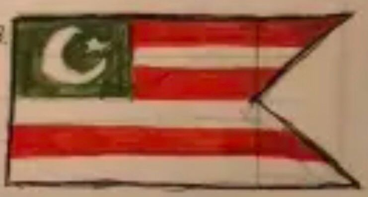

National Flag of Tanomadala

The National Flag of Tanomadala (Indonesian: Bendera Nasional Tanomadala) is a swallowtail banner, which means that it is not a perfect rectangle, but rather has a triangular shape cut out on the fly side of the flag. The flag has an aspect ratio of 1:2, which means for every 1 unit of height, there are 2 units of width (some also say 2:1 if refering to the aspect ratio by width:height).
The flag features six horizontal stripes, alternating orange and gold (or yellow), beginning with orange and ending with yellow. In the top-left corner, or more commonly refered to in vexillology as the canton, is a navy blue box bearing a stylized golden hammer which bears a five-pointed navy blue star.
It was designed by Quentin Pieter, along with help from the former parliament of the DPRR, primarily allies, such as Martland and Ardaria on the 20th of March, 2026. The design was later slightly modified on the 10th of May, but the main design and its elements remained.
History
On the 9th of August, 2025, Quentin Pieter began the first steps towards micronationalism, and created the Democratic People's Republic of Ruandaman. On that same day, the first set flags for the DPRR were created. Up to 7 designs were made by Quentin and were put up for public vote up until the 14th of September, 2025. The referendum even included designs from government members such as small-time YouTuber BelmontReal, and fellow micronationalist Redinian Gomery, president of the Republic of Ohridia.





On the 14th of September, 2025, design number 3 (the one in the middle) was voted on by 57% of the voters to become to first official flag of the DPRR.

The first national flag of the Democratic People's Republic of Ruandaman is a swallowtail, featuring 5 red and white stripes, with a green canton bearing a white Islamic crescent moon and five-pointed star inbetween its points. The flag reigned over the nation from the 14th of September until the 9th of November, 2025. As one might notice, the original design (design 3) had 6 stripes, but was changed to have 5 stripes when making it official. This was done because when vectorizing the design, Quentin forgot that and made it have 5 stripes instead.
The 5 stripes symbolized the 5 pillars of Islam, which are Shahada (declaration of faith), Shalat (daily prayer), Zakat (charity), Sawm (fasting during Ramadhan), and Hajj (pilgrimage to the Mecca). The green of the canton represented Islam in general, as green is a color closley associated with Islam, as it is considered the color of paradise and is commonly used in Islamic flags, such as the flag of Saudi Arabia. Shockingly, the crescent moon and star represents Islam as well. As one might notice, this is a very Islamic influenced flag, even though Ruandaman was never officialy an Islamic state. The red and white stripes are supposed to resemble the reconstructed flag of the Majapahit empire. This design element was chosen because the Majapahit empire was the largest major empire that occupied Java, and Quentin thought it would be neat to represent that on the national flag.
Later on the 8th of November, 2025, Quentin went out to get the national flag custom made to later be hung outside the residence where Ruandaman stood.